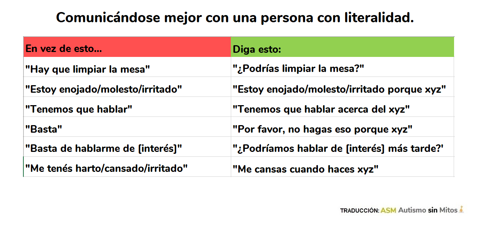

LITERALIDAD
Los problemas de comunicación son DE AMBOS LADOS.
La literalidad es una característica muy común en las personas en el espectro autista. Y el problema con ello no es realmente de la persona, sino de quien se comunica con ella. El que se comunica "literalmente", en realidad está siguiendo las reglas sintácticas y semánticas del idioma para comunicarse de manera correcta; el inconveniente es de quien no habla diciendo lo que debería decir. "Hay que colgar la ropa", dirá una persona. "Está bien", puede contestar un literal, aceptando que sí, hay que colgarla. Jamás se le ocurrirá que la otra persona le está pidiendo a Él que tiene que hacerlo, porque no se lo está DICIENDO.